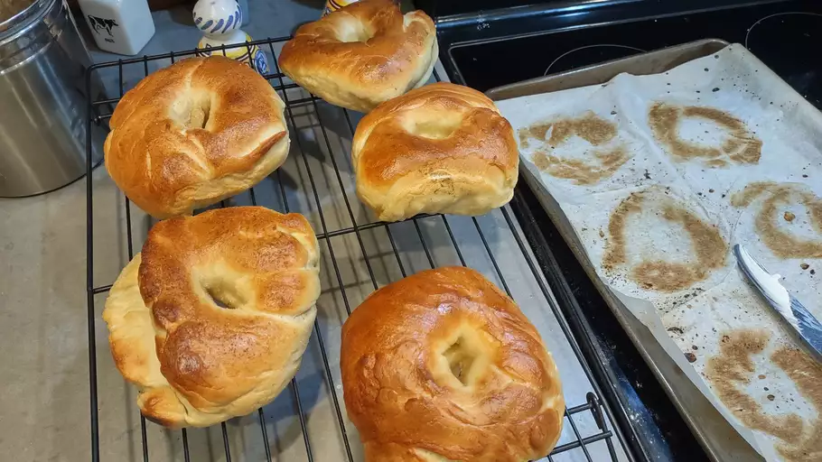

Bagel

Homemade Bagels
A delicious bagel recipe for that authentic bagel flavor and texture.
Ingredients
- 1 ¼ cups water
- 4 ½ cups bread flour
- 3 tablespoons white sugar
- 1 teaspoon salt
- 2 tablespoons vegetable oil
- 1 tablespoon instant yeast
- 4 quarts water
Steps
- Make bagels: Combine water, flour, sugar, salt, vegetable oil, and yeast in the bowl of a stand mixer fitted with the dough hook.
- Transfer dough to a lightly oiled bowl, cover it with plastic wrap
- Punch dough down, place it on a lightly floured work surface
- Preheat the oven to 475 degrees F (245 degrees C).
- Bring 4 quarts of water to a boil in a large pot. Add honey, if desired (see Editor's Note).
- Dip the tops of the wet bagels into the toppings and arrange them,
- Bake in the preheated oven until the bagels begin to brown, 15 to 20 minutes.